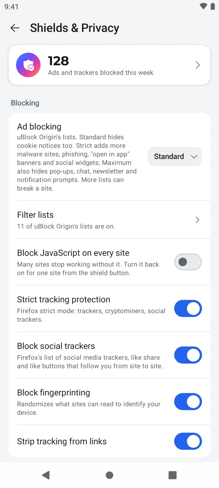
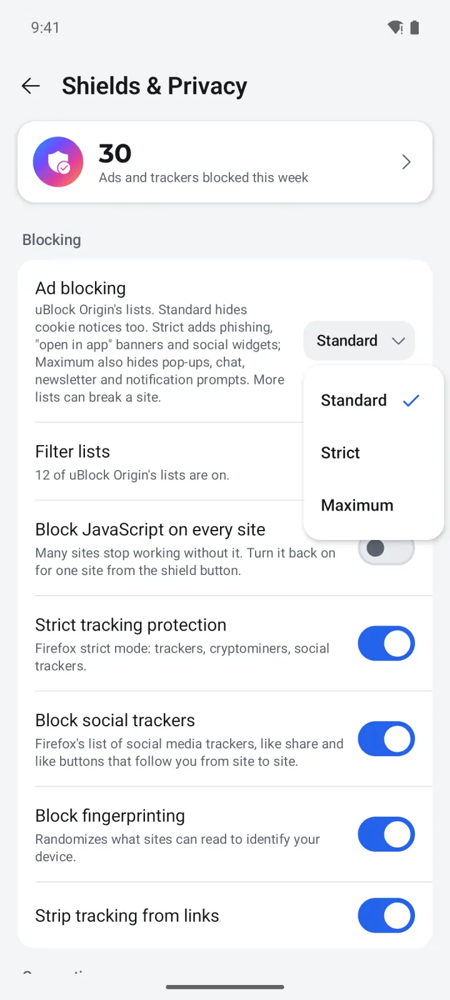
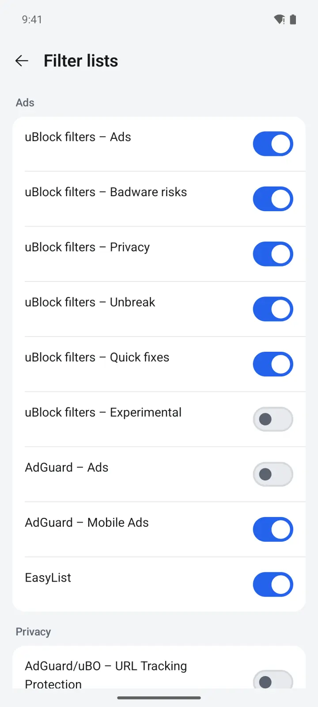
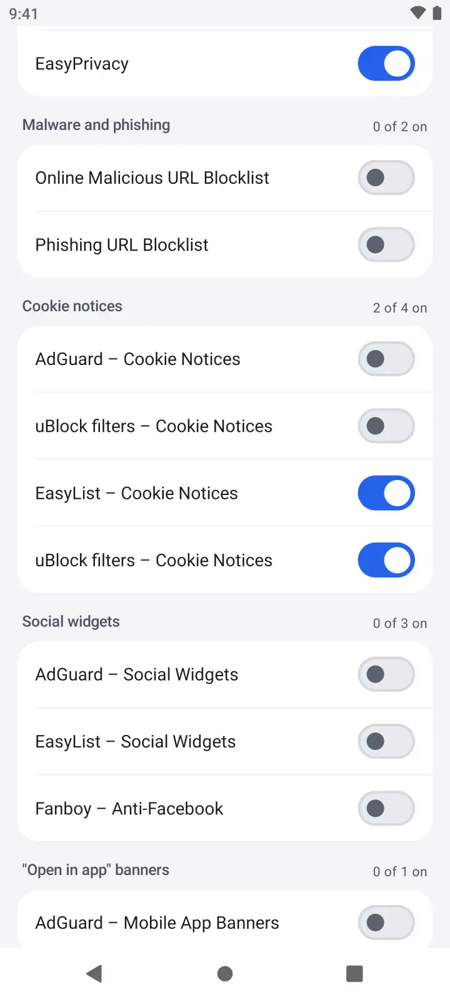

Choose how much Wayward blocks
How-to
Wayward starts blocking automatically. If you want more, or less, it's all in one place: open the ⋮ menu, then Settings > Shields & Privacy. The screen is called Shields & Privacy.
At the top, a card shows how many ads and trackers were blocked this week. Tap it for the day-by-day numbers. It's there even if you hid the count from the start page.

Ad blocking: three levels
Tap Ad blocking and pick one:
- Standard (the default): ads, trackers, malware and cookie notices. It breaks the fewest sites. Its malware list is uBlock Origin's own.
- Strict adds a much bigger malware list (URLhaus, over 100,000 addresses, which takes more of your phone's memory), phishing sites, tracking in links, sites reaching into your home network, "open in app" banners and social media widgets.
- Maximum also hides pop-ups, chat boxes, newsletter and notification prompts, and other annoyances. More sites can break.
If you turn lists on or off yourself, it reads Custom. Any level can break a site now and then: see let a broken site through.

Just after Wayward starts, uBlock Origin may still be getting ready. Its rows then read Ads & trackers, saying it's loading its settings; open the screen again in a moment.
Filter lists
Filter lists shows how many of uBlock Origin's lists are on, and opens them all as switches, in sections: Ads, Privacy, Malware and phishing, Cookie notices, Social widgets, "Open in app" banners, Annoyances, Host lists and Regional. Turn any of them on or off.
A list that isn't on your phone yet downloads the first time you turn it on, and the lists update by themselves after that. More lists means more for each page to load. This screen only switches lists uBlock Origin already knows; adding one by its address is done in uBlock Origin's own dashboard (see the Shields questions).


To hide pop-ups that cover pages, see hide pop-ups and overlays.
The other blocking switches
The rest of Blocking is switches. All of them are on unless you turn them off, apart from the first:
- Block JavaScript on every site (off to start with). Many sites stop working without it. You can turn it back on for one site from the shield button.
- Strict tracking protection: Firefox's strict mode, against trackers, cryptominers and social trackers.
- Block social trackers: share and like buttons that follow you from site to site.
- Block fingerprinting: mixes up what sites can read to recognize your phone.
- Strip tracking from links: takes tags like fbclid and utm_ off addresses.
More in Privacy & security
- Lock Wayward down
- See what was blocked, and let a broken site through
- Hide pop-ups and overlays on pages
- Secure connections, Secure DNS and the other privacy settings
- Camera, notifications and other site permissions
- Use private tabs
- Keep sign-ins apart with spaces
- Lock a tab, your private tabs, a space or Downloads
- Clear data, Shred a site, or delete everything